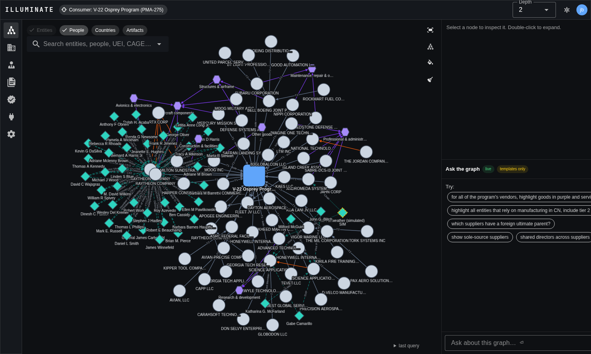
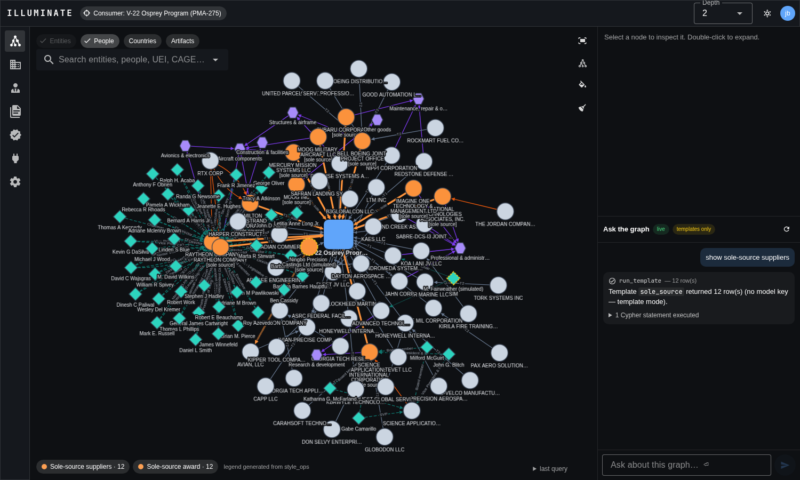
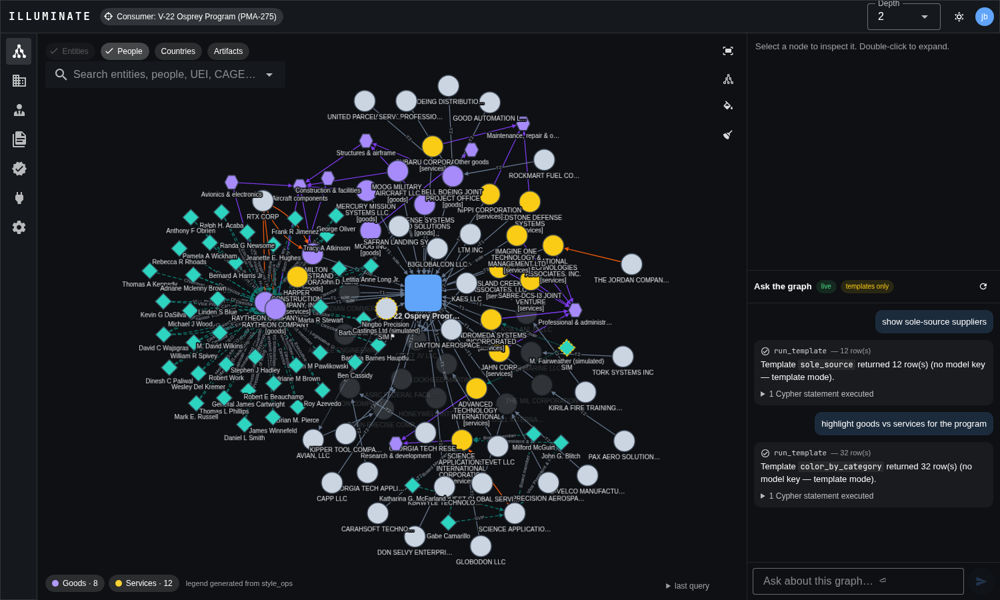
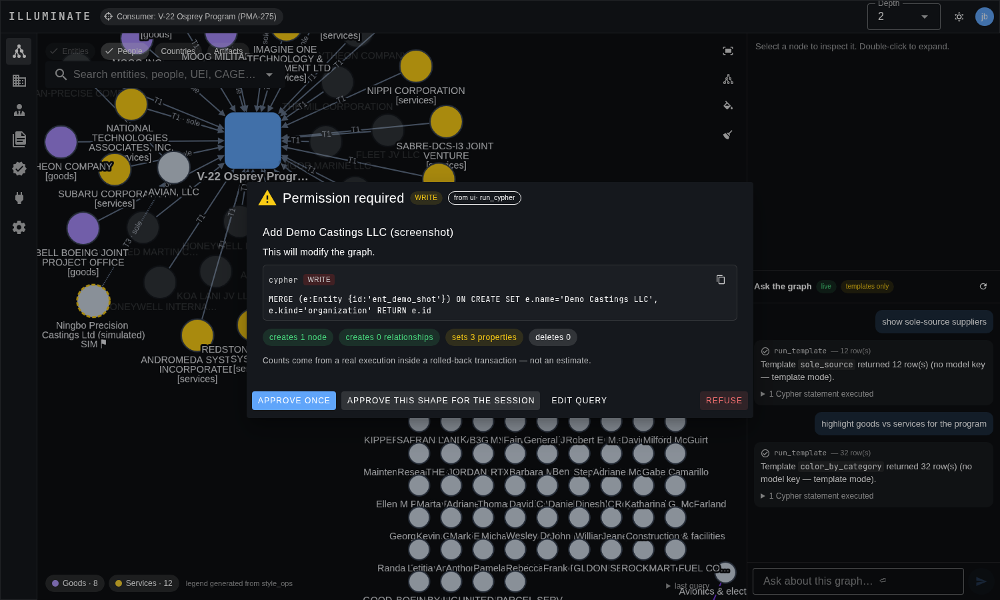
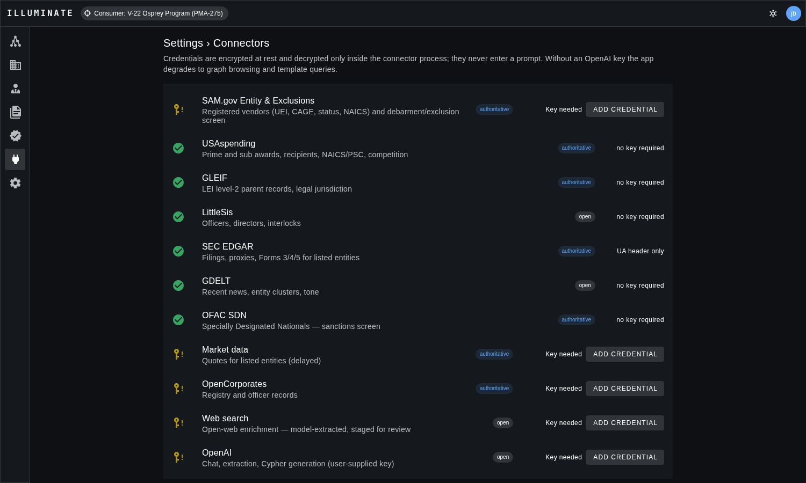
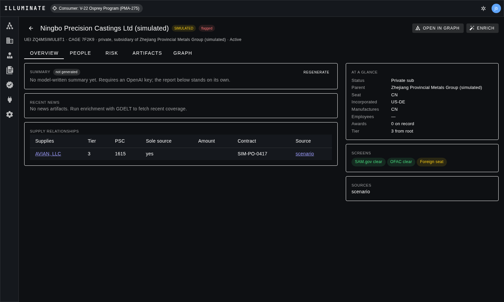
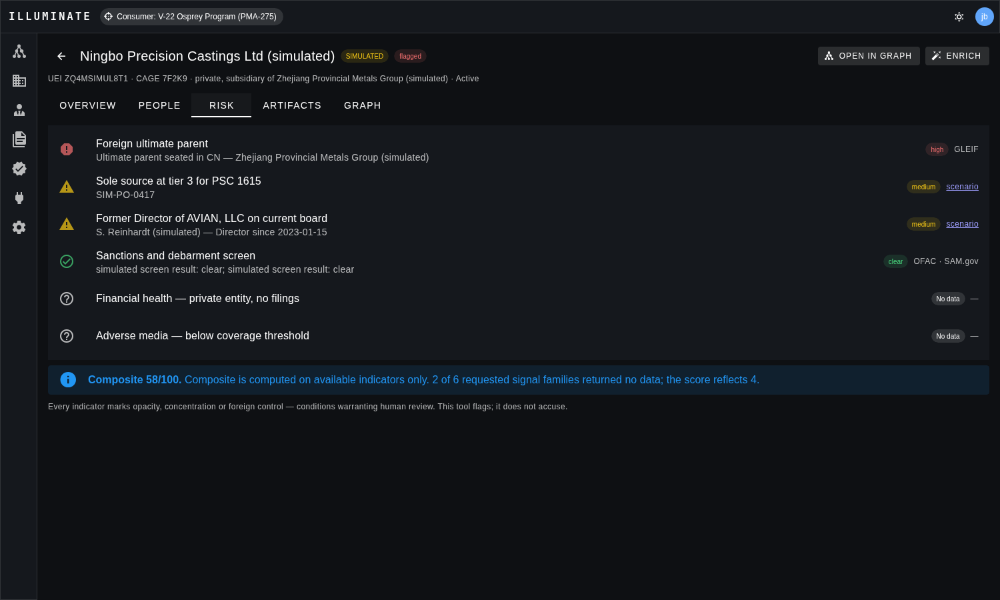
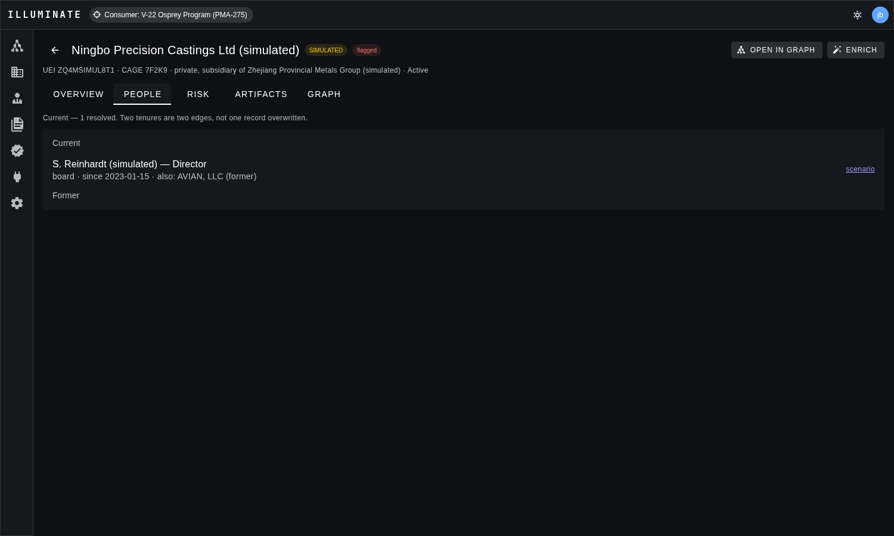
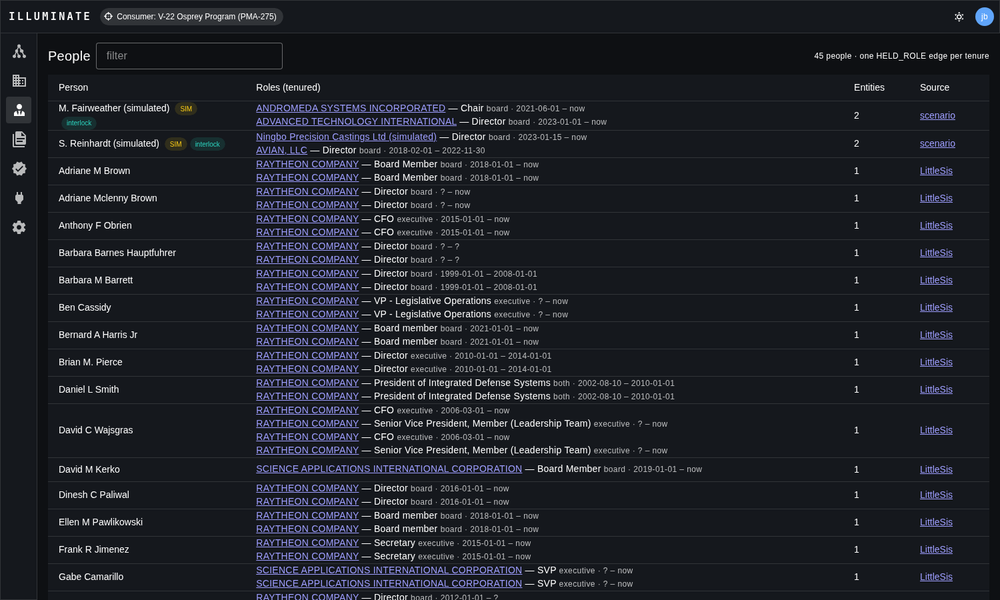

Illuminate
A supplier-network intelligence platform that does not know it is about defense. Model any consumer's dependency graph, attach evidence to every edge, and ask it questions in plain language. Point it at a DoD program and it answers one use case; point it at the government as a buying organisation and it answers the other.
Root = a program. Walk suppliers tier by tier, surface foreign control, sole-source chokepoints and shared people.
Root = the buying organisation. One vendor report: identity, geography, control, people, affiliations, and a scored risk profile with citations — carried on every organisation and person in the graph, not just the one on screen.
The graph is the product
Every answer Illuminate gives is a subgraph. Questions typed into the chat rail become either a named template query or validated, generated Cypher, the store returns nodes and edges, and the canvas draws exactly what came back. The executed query is always shown, so a reader can check the work.
Nothing is asserted without a record behind it. Facts from connectors are staged as claims, each pointing at the artifact that evidences it, and only trusted sources commit directly. The same tool contract serves the in-app model and any external agent over MCP, so the permission gate in front of writes applies to both.
What it is built from
| Layer | Stack | Where |
|---|---|---|
| Store | Neo4j 5 with APOC | docker-compose.yml |
| Backend | FastAPI, neo4j async driver, OpenAI SDK, MCP SDK | api/illuminate/ |
| Frontend | Vue 3 · Vuetify 3 · Cytoscape.js (fcose) · Pinia | web/src/ |
| Model access | User-supplied OpenAI key, encrypted at rest; two tiers (strong, fast) | Settings › Connectors |
| Agent surface | In-app tool calling and MCP (stdio + streamable HTTP) over one handler module | api/illuminate/tools/, mcp_server.py |
The demo graph: V-22 Osprey Program (PMA-275)
The seed builds the program from live public sources and caches every response as a fixture, so the graph rebuilds offline in about a minute. Everything below is real, published data, with one exception that is labelled as such.
Nodes by label
Sources
| Source | Cached calls | Contributes |
|---|---|---|
| USAspending | 92 | Top-20 prime recipients by obligated amount since FY2020 (UEI, business types, address, place of performance, PSC/NAICS, competition → sole_source) plus all reported sub-awardees at tier 2. Awards are Artifact {kind:'award'} nodes. The same keyword award search runs on demand for any program added later, through the discover_suppliers tool — the one source that proposes SUPPLIES. |
| GLEIF | 77 | LEI, legal jurisdiction (INCORPORATED_IN), level-2 direct and ultimate parents (OWNS, ULTIMATE_PARENT_OF, PARENT_SEATED_IN). Real finding: eight tier-1 suppliers resolve to a foreign ultimate parent, Subaru to Japan and Canadian Commercial Corporation to Canada among them. |
| LittleSis | 71 | Officers and directors as Person nodes with one tenured HELD_ROLE edge per term, and each officer's other seats — government bodies become kind:'agency' entities, so a revolving-door tie needs no second supplier in the graph. The org record adds revenue, the Senate LDA registrant id, aliases and LittleSis types; the org's own ties land as OWNS (ownership and hierarchy rows), MEMBER_OF, TRANSACTS_WITH, LOBBIES and DONATED_TO. All of it is open-source and stays a lead. |
| SEC EDGAR | 6 | Tickers, CIKs and filings for the listed firms. |
| SAM.gov Entity | 5 | Registration status, CAGE, incorporation, NAICS per vendor. The personal-key tier allows about ten calls a day, so this fills in slowly. |
| OFAC SDN | bulk | Sanctions screen on every entity, matched locally by UEI, CAGE and strict name; recorded as claims with the matched rows as detail. |
| SAM.gov Exclusions | bulk | Debarment and suspension screen against the public daily extract, 33,861 firm and special-entity records. No key, no quota spent. |
| UN Consolidated List | bulk | The multilateral counterpart to the SDN: a vendor clear under OFAC can still sit on a UN designation. Entities and individuals both indexed, so a named officer is screened as well as their employer. |
| DoD §1260H | committed | Chinese military companies named by the Department of Defense. Not a sanctions list — from June 2026 the statute bars DoD from contracting with a listed firm or with anything that supplies one, which is why it usually lands two or three hops up an ownership chain rather than on the vendor. DoD publishes it as a PDF annex, so the roster is committed in the connector like a fixture; it is an excerpt, and every result, clear ones included, says so. |
The one simulated tie
The brief allows a simulated or historical adversarial relationship. The --scenario flag adds exactly one, attached sole-source at tier 3, with a former director of its tier-2 customer on its board. Every synthetic node and edge carries simulated: true and the UI badges it. Seven nodes and fourteen edges in total.
What the app looks like





The vendor report (UC-11)




How the proposal's decisions show up in code
The solution proposal fixed eight design decisions, D1 to D8. Each maps onto a specific module.
tools/contract.py defines ten tools once. The chat module hands them to the model and the MCP server publishes the identical list. Both call the same dispatch, so the permission gate applies to external agents too.
Templates and generated Cypher return real subgraphs through graphio.py; the canvas draws what the query returned. A vector index over filings is a stated post-hackathon cut.
The validator classifies every statement READ, WRITE, DESTRUCTIVE or SCHEMA, enforces the label, relationship and APOC allowlist, caps variable-length hops at 6, appends or clamps LIMIT, and rejects CALL db.*, LOAD CSV, admin commands and multi-statements. Reads run under a read session with a timeout. The executed Cypher is always shown in the UI.
A WRITE or DESTRUCTIVE statement executes inside a transaction that is rolled back to obtain real counters, then is held for the user: approve once, approve this shape for the session, edit, or refuse. Destructive statements require the affected count to be acknowledged and never auto-approve. Refusals return to the model as tool results.
Connectors propose facts. enrichment/claims.py stages each as a claim with its artifact; the trust rule commits authoritative-connector facts, holds open-source facts until a human or a second independent source agrees, and writes the direct relationship with a claim_id for fast traversal.
Style operations reference element ids. Fill and stroke are palette names resolved to theme-tested tokens; unknown names fall back to neutral with a warning; the legend is derived from the operations.
vault.py encrypts keys per user with Fernet. The model receives tool results, never keys.
The client picks a strong or fast model per task. Prompts keep the schema, tools and taxonomy prefix constant, around 1.9k tokens and above OpenAI's cache threshold, and append per-turn context separately.
Two modelling choices visible in the schema
Country is not one field. Incorporation, operations, manufacturing and the seat of the parent are four different relationships to Location nodes: INCORPORATED_IN, OPERATES_IN, MANUFACTURES_IN, PARENT_SEATED_IN. A Delaware shell that manufactures in China is representable without a lie.
Evidence attaches to assertions. Claims are reified nodes with ASSERTS and TARGETS edges, and an Artifact evidences a claim. The direct relationship is written alongside for traversal speed, carrying the claim id.
Risk is a property of the node
Every Entity and Person carries a computed risk_score (0–100), a band, the dimension that led it, and the full breakdown as evidence. It is written by a bulk pass over the whole graph (api/illuminate/risk.py), so the canvas, the entity and people lists, the vendor report and Cypher all read one number rather than four opinions. The pass runs after every enrichment job, at the end of a seed, and on demand from POST /api/risk/rescore.
| Dimension | Weight | What it reads |
|---|---|---|
| Designation | 3.0 | The node's own screens: OFAC SDN, UN Consolidated List, SAM exclusions, DoD §1260H. A hit here is the finding; nothing else competes with it. |
| Proximity | 2.0 | Degrees of separation from a designated party, walked up to three hops over ownership, personnel and commercial edges. One hop is high, two medium, three low. This is the dimension that only a graph can compute, and the one that catches a vendor whose own record is spotless. Asymmetric on supply edges: buying from a designated party puts its problem inside your product, while selling to one is a smaller concern of a different kind, so a route that only exists against the flow of supply grades one step softer. Control and personnel edges stay undirected — owning a designated subsidiary and being owned by a designated parent are both severe, and a shared officer has no direction at all. |
| Dependency | 2.0 | What a consumer inherits from the suppliers it cannot replace, and the reason sole-source status is scored here rather than on the supplier. Each sole source contributes its own risk undiluted, because it is a single point of failure in its own right; a substitutable group shares one unit of dependence and contributes its share-weighted average. Sole sources are graded on the worst, never added up — otherwise a long list of unremarkable ones manufactures a severe finding out of nothing. |
| Foreign control | 1.5 | Incorporation, ultimate-parent seat, operations and manufacture, classified by jurisdiction: covered nations under 10 U.S.C. § 4872, embargoed states, allies. Read separately, worst wins — a Delaware shell that manufactures in a covered nation answers the first question reassuringly and the third not at all. A chain through a non-disclosing registry is its own finding, because it cannot be walked to its end. |
| Financial distress | 1.5 | Lapsed or expiring SAM registration, dissolved registry status, notifications of late filing (NT 10-K/10-Q), a listed company that has stopped filing, collapsed market value. Filing behaviour, not financial-statement analysis, and it says so. |
| Regional exposure | 1.0 | Armed conflict and natural-hazard exposure where the entity physically operates and manufactures — deliberately blind to incorporation, since a hurricane does not read the paperwork. Manufacture counts above operation. US places resolve against state-level hazard, everywhere else against country. |
| Adverse media | 0.75 | The GDELT media screen, where one has run. |
People are graded on the dimensions that mean something for a person — designation, proximity and the jurisdictions of the seats they hold. A person's exposure comes from where they sit, never from their name: the graph records no nationality for most people, and guessing one is how a screening tool becomes a discrimination engine.
A signal that returned no data is not a zero
The score is the weighted mean over the dimensions that answered. A dimension with nothing to go on abstains, and a country absent from the reference tables scores as no-data rather than as safe. That keeps the model honest but makes the raw number ambiguous on its own: an unscreened vendor one hop from a designated party, seated in a covered nation, scores 100 on two dimensions and outranks a party that is itself designated but graded on six. Both orderings are defensible — all we know about the first one is bad — so every node also carries risk_confidence, the share of the model's weight that answered, and it is drawn next to the score everywhere: in the table, on the canvas badge, in the inspector and at the top of the report.
The report keeps its narrative families — interlocks, government ties, affiliations, political exposure, and the vendor's own sole-source position — but shows them separately as context. They are leads, not findings, by this report's own long-standing account, so they explain a score rather than move it. The sharpest of them, an officer sitting inside a designated entity, is already scored: it is a two-hop proximity finding through a HELD_ROLE edge.
Jurisdiction, conflict and hazard tables are a committed snapshot (api/illuminate/riskdata.py) with a stated date and source, for the same reason the seed commits its fixtures: a score that silently depended on a live third-party index would be unreproducible.
API and MCP
REST under /api with OpenAPI at /docs: graph, search and subgraph; entities and their report (the UC-11 profile); people; risk (the graph ranked by score, one node's breakdown, and rescore); artifacts; claims with commit and reject; query (cypher, template, validate, styles); permissions with approve and refuse; connectors and credentials; enrichment jobs; workspace settings.
Chat runs over a websocket at /ws/chat; permission requests and job updates are broadcast on the same socket. MCP is served at POST /mcp/ as stateless streamable HTTP, and as illuminate-mcp over stdio, for Claude Desktop or Claude Code:
{ "mcpServers": { "illuminate": { "command": "/path/to/api/.venv/bin/illuminate-mcp" } } }Things to ask it
With an OpenAI key the model chooses between templates and generated Cypher and can call the enrichment tools. Without one, typed questions are matched to templates by intent. The app degrades; it does not fail.
Honest limits
Entity resolution is the whole game. UEI, CAGE and LEI carry it; the residue is name matching with a matcher tuned to refuse the subset trap, and every fuzzy merge records its method and confidence. Sub-award coverage is uneven, so tier depth varies by program.
Text-to-Cypher fails in ways that look like answers, which is why templates are the default and the query is always shown. People are harder to resolve than companies and coverage is skewed to large listed firms.
SAM.gov's personal-key tier allows about ten Entity API calls a day, so per-vendor registration details fill in slowly unless a federal or system-account key is used. The exclusion screen does not depend on it because it runs against the public daily extract.
The risk score is a triage instrument, not an adjudication. Financial distress is read from filing behaviour — a late-filing notice, an annual report that stopped arriving — never from the financial statements themselves, and a private vendor with no filings produces no signal at all, which is the common case in a sub-tier supply base. The conflict and hazard tables are a hand-curated snapshot with a stated date; countries absent from them abstain rather than score clear. The §1260H roster is an excerpt of the published annex, so a clear result against it is not a clearance and says so on every screen.
Running it
The README is the short version: make up to start, make backup to archive the Neo4j volume and api/data, make restore BACKUP=latest or BACKUP=<archive> make up to boot from a backup.
| Where | Address |
|---|---|
| Web (compose) | http://localhost:8080 |
| Web (host dev) | http://localhost:5173 |
| API and OpenAPI docs | http://localhost:8000/docs · MCP at /mcp |
| Neo4j browser | http://localhost:7474 · bolt://localhost:7687 · neo4j / illuminate-dev |
Keys
USAspending, GLEIF, OFAC, LittleSis, SEC EDGAR, GDELT and the SAM exclusions extract need no key. OpenAI (chat and generation) and SAM.gov Entity (registration details, personal tier throttled) are entered in Settings › Connectors and stored encrypted in api/data/. Details and registration links are in docs/ACCOUNTS.md.
Tests
cd api && .venv/bin/python -m pytest -q # validator + templates (pure); gate + WS (live Neo4j, skipped if down)
cd web && npm run build